Fine artist who specialises in drawing and painting.
Timeline
2019
Derbyshire YMCA creating a group art piece for the outside space with the residents.
Shout Out project, funded by the arts council, Leicester City council, & Leicesters Everybody’s Reading festival. 36 workshops with 3 young people’s sheltered accommodation.
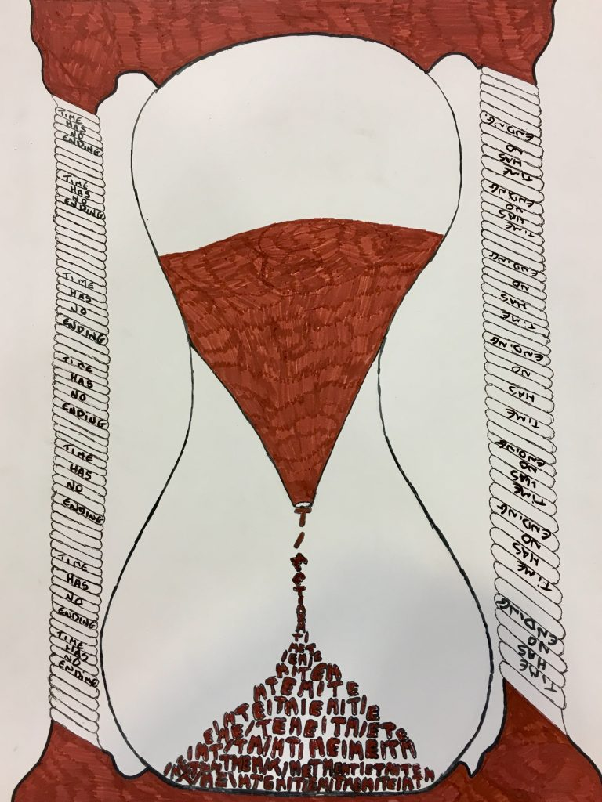
2018
The invisible Voices exhibition.
Creating 3 murals with the Harrington nursery Derby with the residents of the YMCA.
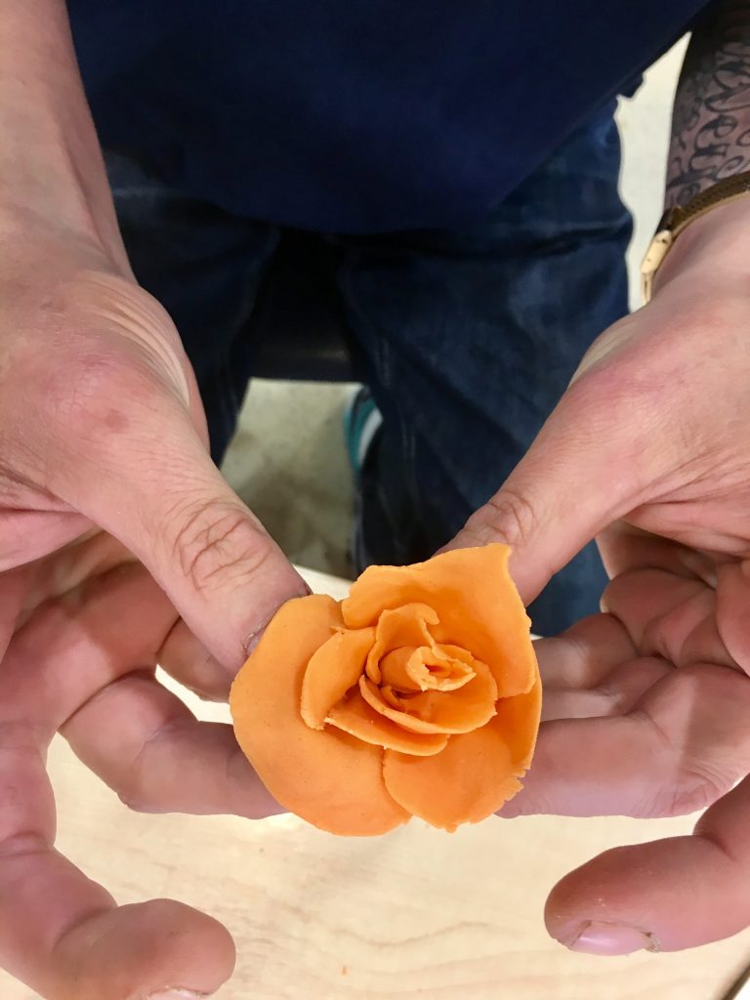
2017
Involving the Y support homeless drop in centre, and two young homeless accommodations in Leicester- a year long series of art workshops, Invisible Voices, funded by the National lottery.
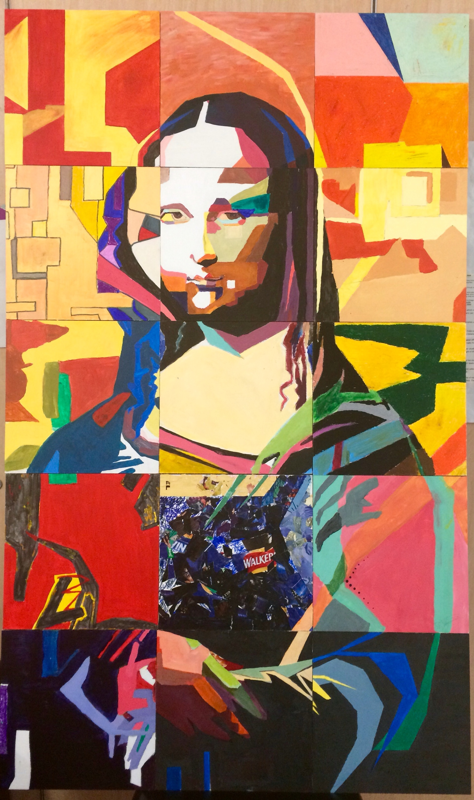
2016
Creative workshops over 20 weeks at the Dawn Centre Leicester, funded by Leicestershire partnerships NHS Trust
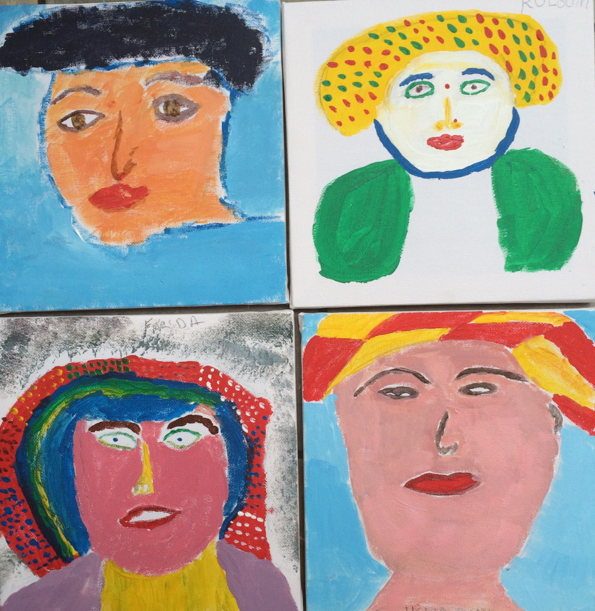
2015
Rubbish Art! An art house project, recycling workshop at Barrow on Soar.
Adhar project, Leicester, Asian community creative workshops, exhibition at Belgrave centre.
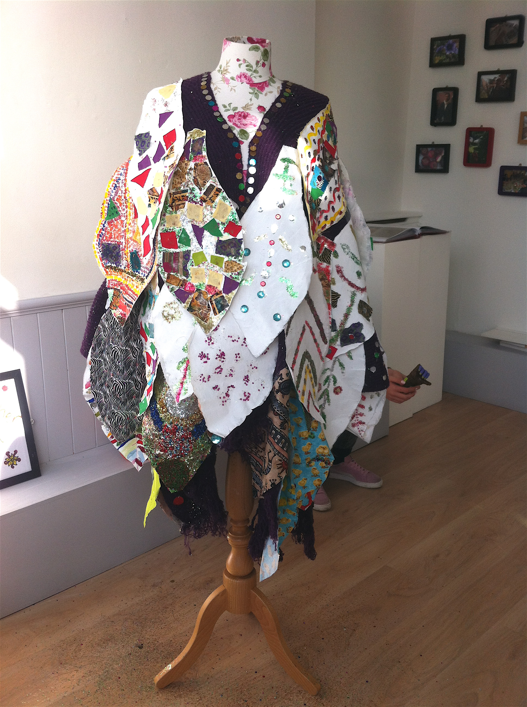
2014
Kushi Group, creative workshops
Leicesters Everybody’s Reading festival arts project with Savera Group
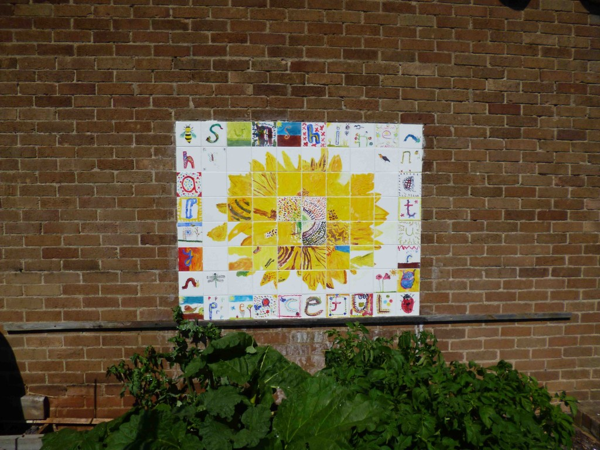
2013
Ibstock school project – outdoor mural with year 10 & year 11
Breedon School garden project
Kushi Group, composite sweet art work
Leicesters Everybody’s Reading festival arts project with Savera Group Leicester, exhibition at Pedestrian arts.
Hamilton & Nether Hall school group art piece to celebrate the opening of the new building – community work for Miller construction
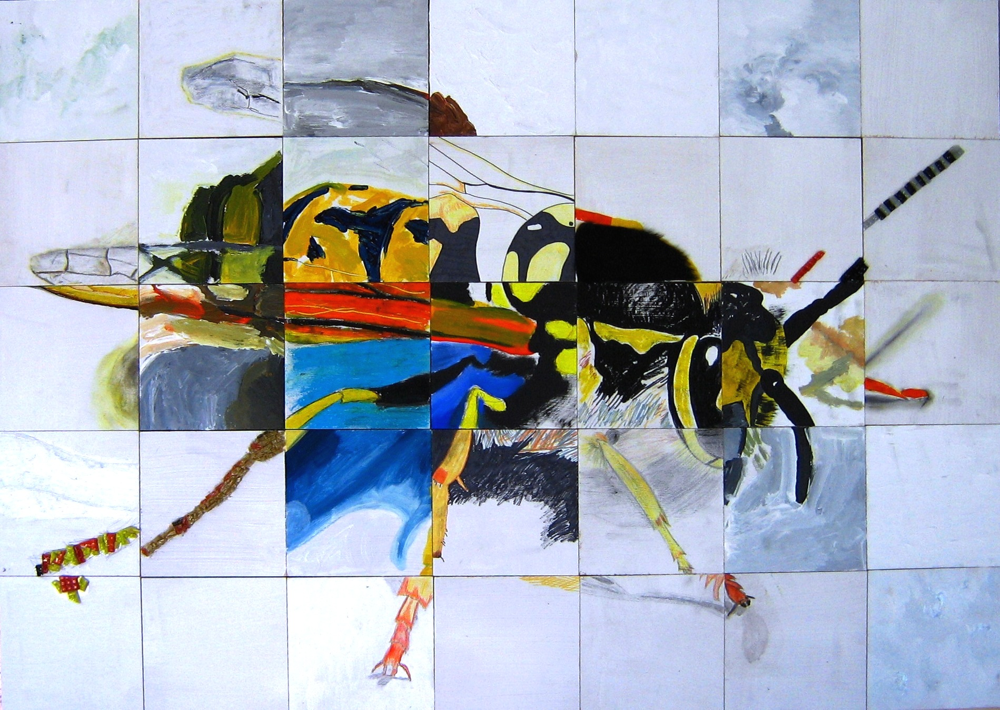
2012
Attic fine art group exhibition, Pedestrian Arts Leicester, January
Darwin exhibition, the Exchange Leicester, January
Series of workshops for Bright Sparks group, Embrace arts, February and March, exhibition to follow in September
Visual game workshop Dame Catherine Harpur school Derby, April
Everybody’s Reading arts project with Savera Group Leicester
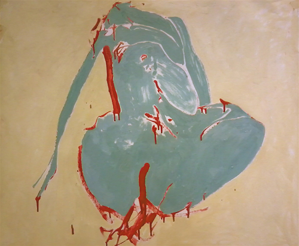
2011
MA Graduation exhibition at De Monfort University, September 3rd preview night.
the Attic fine art group exhibition, October.
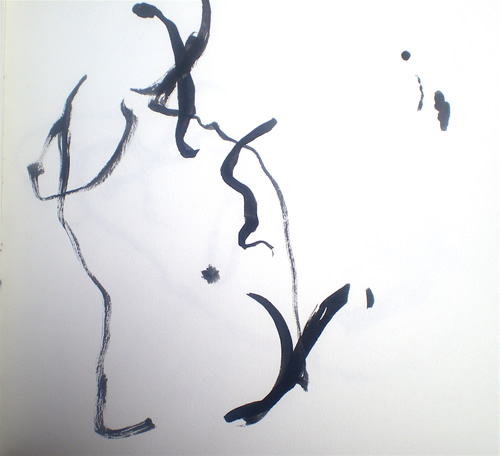
2010
In house exhibitions at De Monfort University
Campaign for Drawing month (October), with Dame Catherine Harpur School
Scribble and Scrawl – Girls with Pencils, The Crompton, Derby
Demoma – Group exhibition, Independant Arts Centre
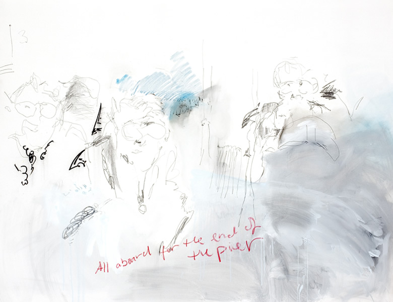
2009
In house exhibitions at De Monfort University
All aboard for the end of the pier, The Crompton, Derby
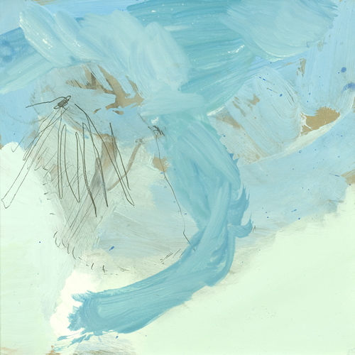
2008
Nottingham Open
Melbourne Festival
Staunton Harold group exhibition
Banks Mill Open Studios
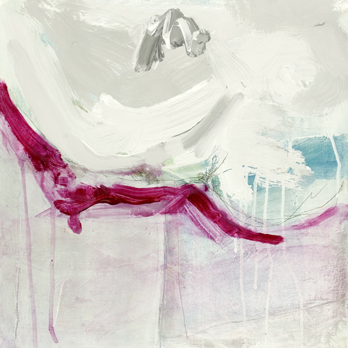
2007
Wirksworth Festival
Melbourne Festival
Drawing project (group exhibition), The Arts Organisation, Nottingham